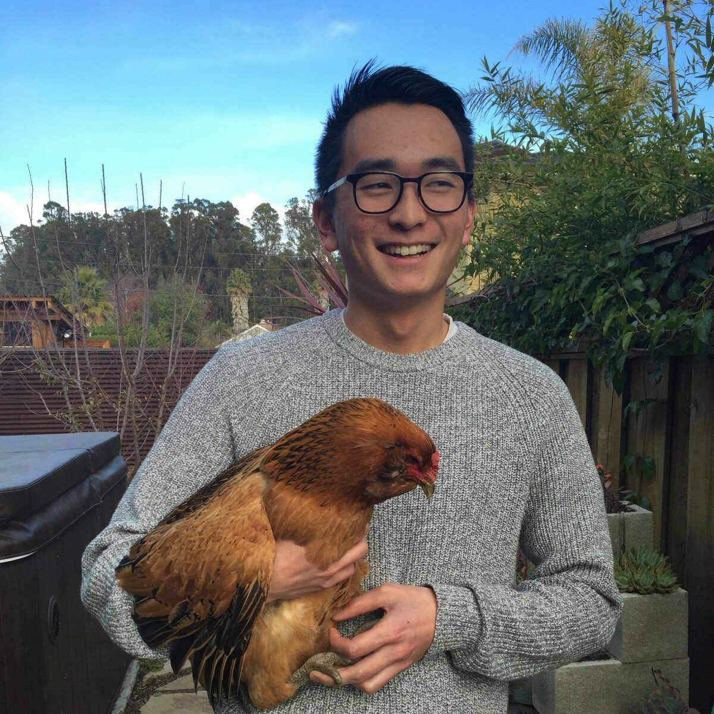

I’m currently a senior Political Science and French major at Lewis & Clark College. I just finished a semester abroad in Senegal learning French, Wolof, and about life in Sub-Saharan Africa. I was also in Paris for the summer doing marketing at Tagattitude and trying not to think too much about the fact that college is almost over.
When I graduate I am interested in working in tech marketing, or product development. Entrepreneurship is a passion of mine and I plan on applying these skills to my future work environment. Most importantly, I hope to continue learning and improving my skills wherever I end up working.
Besides that, I spend my time traveling, drinking too much coffee, dreaming, golfing, skiing, meeting people, playing frisbee, listening to music, eating good food, and trying new things.